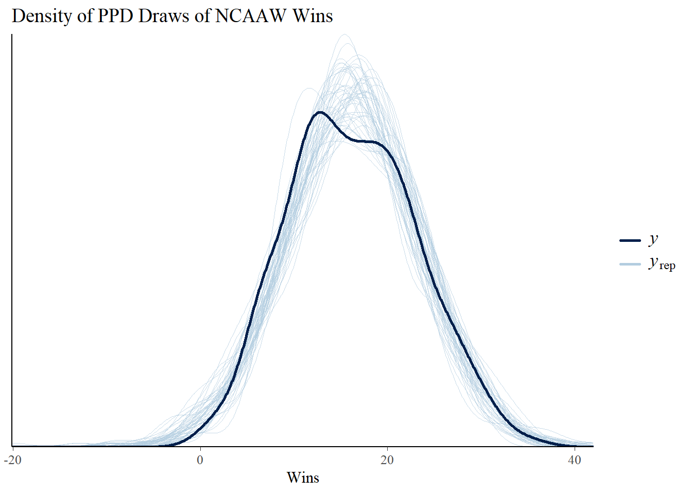
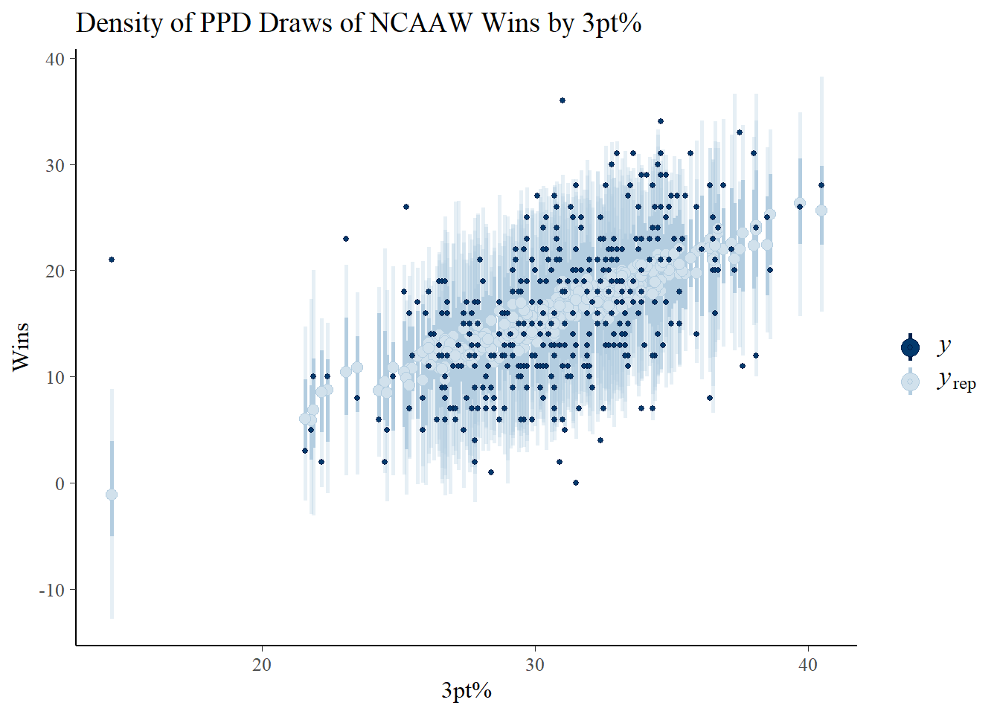

A Very Brief Introduction to Bayesian Data Analysis
The broadest conceptual overview of Bayesian data analysis is that this methodology allows us to incorporate prior knowledge about the model/data into our analysis which is based on a posterior distribution that is derived from the prior and likelihood. Bayesian inference treats the parameters of the model as random variables whose distribution we are interested in either deriving analytically or approximating through computation. This is a key distinction from frequentist methods taught in math stat and applied stat where parameters are fixed values and their estimators are functions of a random sample and the sampling distribution of the estimator is used for inference.
Bayes Rule
A quick reminder of Bayes Rule.
Let \(\theta\) be a random variable with (prior) distribution \(p(\theta)\), \(Y\) be a random variable that depends on \(\theta\) with conditional distribution or likelihood \(p(y | \theta)\). Then their joint distribution is \(p(y, \theta) = p(y|\theta) p(\theta)\).
Bayes rule lets us flip the conditioning from the likelihood to get \(p(\theta | y)\)
To be a little more specific, we have three central components to the model. For ease of exposition, let’s consider the simple regression model \(E(Y_i | X_i = x_i, \boldsymbol{\beta}, \sigma^2) = \beta_0 + \beta_1 X_i\) and \(Var(Y_i | X_i = x_i, \boldsymbol{\beta}, \sigma^2) = \sigma^2\) where we have \(i = 1,\dots,N\) observations of \((Y_i, X_i)'\) from Ch. 14 of Bayesian Data Analysis (Gelman et al. 2013, 354–58). From here on I will suppress conditioning on the observed predictor \(X_i = x_i\) since we are considering the design matrix \(X = (1_N, \mathbf{x})\) to be fixed and known where \(\mathbf{x} = (x_1,\dots, x_N)'\).
The Prior: a distribution for the parameters that doesn’t depend on the data \(p(\theta)\).
The (Data) Likelihood: a model for the data that depends on the parameters \(p(y | \theta)\).
The Posterior: a distribution that uses Bayes rule to define distribution of the parameters given the data \(p(\theta|y)\).
Why Stan?
Stan is one of several ways to run MCMC for Bayesian inference
Nimble and OpenBUGS are two other languages dedicated to probabilistic programming
R, Rcpp, Julia, and Python are other more general purpose options for writing the sampler from scratch
Other methods use combinations of Gibbs, Metropolis-Hastings, and slice sampling; Stan uses Hamiltonian Monte Carlo and the No-U-Turn Sampler (NUTS) which is more efficient and typically requires less thinning
Stan only allows for continuous parameters
Some examples in Stan
We’ll continue with the single predictor regression model to model NCAA Women’s Basketball team’s total wins by their 3 point field goal percentage from the 2022-2023 season. Data collected from NCAA.
Rows: 350 Columns: 11
── Column specification ────────────────────────────────────────────────────────
Delimiter: ","
chr (2): Team, WL
dbl (9): G, FT, FTA, FTpct, FG3, FG3A, FG3pct, W, L
ℹ Use `spec()` to retrieve the full column specification for this data.
ℹ Specify the column types or set `show_col_types = FALSE` to quiet this message.
In the 2022-2023 season there were \(N = 350\) teams. The relationship between their wins and three point percentage is displayed in Figure 1.
// The input data is two vectors 'y' and 'X' of length 'N'.data {int<lower=0> N;vector[N] y;vector[N] x;}transformed data {matrix[N, 2] X_c = append_col(rep_vector(1, N), x);matrix[2,2] XtX_inv = inverse(X_c' * X_c);vector[2] beta_hat = XtX_inv * X_c' * y;vector[N] y_hat = X_C * beta_hat;real<lower=0> s_2 = 1 / (N - 2) * (y - y_hat)' * (y - y_hat);}// The parameters accepted by the model. Our model// accepts two parameters 'beta' and 'sigma'.parameters {vector beta;real<lower=0> sigma; // Note that this is the variance}// The model to be estimated. We model the output// 'y' ~ N(x beta, sigma) by specifying the analytic// posterior defined above.model { beta ~ multi_normal(beta_hat, sigma^2 * XtX_inv); sigma^2 ~ scaled_inv_chi_square(N-2, sqrt(s_2));}generated quantities {vector[N] y_ppd;for (i in1:N) { y_ppd[i] = normal_rng(X_c[i,] * beta, sigma); }}
Next we fit the model using cmdstanr. In this case, I will use 1000 warmup iterations, 1000 sampling iterations, with no thinning (thinning includes only every \(k\)th draw), and will refresh the print screen to see progress every 500 iterations. We can run several chains to see if where the chains start dictates any part of the posterior shape or location, and chains can be run in parallel to get more draws <=> better posterior approximation more quickly.
Next we’ll check diagnostics for the sampler. First, we will look at the numeric diagnostic output from the method $diagnostic_summary() which reports if any transitions were divergent, if maximum tree depth was reached, and EBFMI. For this model and data set we don’t see any issues in these summaries.
Next, we check the traceplots in Figure 3 (a). The MCMC draws can be collected from the fit object using the $draws() method. These plots display the sampled values for each parameter in a line plot. We are looking for a horizontal fuzzy bar. Then we can also look at density plots in Figure 3 (b) which will tell us if the chains reached reasonably similar densities. On both counts, we are in good shape. The plots are created using the bayesplot package.
(b) Approximate posterior densities for \(\beta\) and \(\sigma\).
Figure 3: Diagnostic plots for the posterior samples. Plots were made using the bayesplot package.
Finally, after checking that the MCMC chains and diagnostics look satisfactory, we can continue to inference. The summary statistics for the parameters are displayed in Table 1. This are generated by default with the $summary() method. The statistics include the posterior mean (mean), median (median), standard deviation (sd), mean absolute deviation (mad), and lower (q5) and upper bounds (q95) for a 90% credible interval. The statistics rhat, ess_bulk, and ess_tail are additional diagnostic measures that indicate how well the chains are sampling the posterior and how many effective draws we have made. Ideally rhat is very near 1, even 1.01 can be a significant problem. The effective sample sizes should be large/near the number of sampling iterations.
Code
intro-to-stan.R
fit1$summary(variables =c("beta", "sigma")) |> kableExtra::kbl(booktabs =TRUE, format ="html")
Table 1: Summary statistics for the posterior samples for \(\beta\) and \(\sigma\).
variable
mean
median
sd
mad
q5
q95
rhat
ess_bulk
ess_tail
beta[1]
-15.170201
-15.17435
2.7264741
2.6386574
-19.6968650
-10.670060
1.003857
600.4229
668.3881
beta[2]
1.016536
1.01743
0.0876394
0.0866691
0.8718595
1.159618
1.004031
596.0433
630.5212
sigma
5.927539
5.92005
0.2185852
0.2262596
5.5846900
6.297106
1.001305
862.2062
822.5273
Code
intro-to-stan.R
mles |> kableExtra::kbl(booktabs =TRUE, format ="html", digits =3)
Table 2: MLE estimates for \(\beta\) and \(\sigma\).
Parameters
Estimates
(Intercept)
beta_0
-14.945
FG3pct
beta_1
1.009
sigma
5.908
We can also check graphical summaries of this same information such as interval plots for each parameter’s credible intervals or density/area plots. In Figure 4 (a) we have the 50% (thick bar) and 95% (thin bar) credible intervals with the posterior mean displayed as a point. The densities are plotted in ridgelines in Figure 4 (b) with areas shaded underneath to indicate the 50% interval and the width of the density indicates the 95% interval.
(b) Approximate posterior densities for \(\beta\) and \(\sigma\) in a ridgeline plot.
Figure 4: Plots for the 50% Credible Interval (inner band) and 95% Credible Interval (outer band) for \(\beta\) and \(\sigma\). Plots were made using the bayesplot package.
One additional way to check model fit is to assess posterior predictive checks. To do so we draw samples from the posterior predictive distribution \(p(y^{new} | y) = \int p(y^{new} | \boldsymbol{\beta}, \sigma) p(\boldsymbol{\beta}, \sigma | y) d\boldsymbol{\beta}d\sigma\) by first sampling from the posterior (i.e. the draws in the MCMC chains) and then for each set of draws sampling \(y^{new}\) given the corresponding values for \(x^{new}\). In Stan this is easily accomplished using the generated quantities block. The generated quantities block generates new samples that we define using the current iteration’s posterior draws of \(\beta\) and \(\sigma\).
generated quantities {// create a vector of N new observationsvector[N] y_ppd; // for each observation, sample from the regression likelihod// using the posterior drawsfor (i in1:N) { y_ppd[i] = normal_rng(X_c[i,] * beta, sigma); }}
We collect the PPD draws from the fit object using the draws method. From Figure 5 we can see that while the predictive densities are centered in the correct location, the variances are far too large.
This is posterior version 1.5.0
Attaching package: 'posterior'
The following object is masked from 'package:bayesplot':
rhat
The following objects are masked from 'package:stats':
mad, sd, var
The following objects are masked from 'package:base':
%in%, match
Code
y_ppd <-as.matrix(as_draws_df(fit1$draws(variables ="y_ppd")))ppc_dens_overlay(ncaaw$W, y_ppd[1:50, 1:350]) +labs(title ="Density of PPD Draws of NCAAW Wins",x ="Wins")ppc_intervals(ncaaw$W, y_ppd[1:50, 1:350],x = ncaaw$FG3pct) +labs(title ="Density of PPD Draws of NCAAW Wins by 3pt%",x ="3pt%",y ="Wins")
Code
intro-to-stan.R
library(posterior)

(a) PPD densities for the wins given 3pt%.

(b) PPD intervals for the wins plotted by 3pt%.
Figure 5: Posterior Predictive Check plots from bayesplot.
Conjugate Prior Regression Model
Next, we’ll implement the regression model with conjugate priors. Conjugacy refers to the situation where the prior and posterior distribution are from the same family. We’ll start by re-defining our model.1
\(\boldsymbol{\beta} | \sigma^2 ~ N_2(\boldsymbol{\beta}_0, \sigma^2 \Lambda_0^{-1})\) where \(\boldsymbol{\beta}_0 \in \mathbb{R}^2\) is a vector of prior coefficients, we’ll set it to zero, and \(\Lambda_0\) is a \(2\times2\) prior correlation matrix. We will set \(\Lambda_0 = 10 I_2\) to get a weakly informative prior that is equivalent to ridge regression.
\(\sigma^2 \sim InvGamma(\frac{\nu_0}{2}, \frac{1}{2} \nu_0 s_0^2)\) where \(\nu_0\) is a prior sample size and \(s_0\) is the prior standard deviation. We’ll set these to \(\nu_0 = 1\) and \(s_0^2 = 47\) which is approximately the sample variance of the NCAA women’s basketball teams’ wins.
The parameters \(\boldsymbol{\beta}_0, \Lambda_0, \nu_0, s_0^2\) that define the prior are referred to as hyperparameters. We will set them before running the model, although they could also be modeled if we wanted.
The (Data) Likelihood: the same as before, \(\mathbf{Y} | \boldsymbol{\beta}, \sigma^2 \sim N_N(X\boldsymbol{\beta}, \sigma^2 I_N).\)
Posterior:
\(\boldsymbol{\beta} | \sigma^2, y \sim N_2(\boldsymbol{\beta}_N, \sigma^2 \Lambda_N^{-1})\) where \(\boldsymbol{\beta}_N = \Lambda_N^{-1}(\mathbf{X}'\mathbf{X} \hat{\boldsymbol{\beta}} + \Lambda_0 \boldsymbol{\beta}_0)\) and \(\Lambda_N = (\mathbf{X}'\mathbf{X} + \Lambda_0).\)
We could again program this model using the analytic posterior. Instead, we’ll program it only through the priors and likelihood and let Stan approximate the posterior. I will also allow the model to include more than one predictor so that \(\mathbf{X}\) is a \(N \times (K+1)\) matrix augmented with a column of ones. (Download the file here)
conjugate-regression.stan
// The input data is a vector 'y' of length 'N'.data {int<lower=0> N;int<lower=0> K;vector[N] y;matrix[N, K] X;// hyperparametersreal beta_0;real<lower=0> lambda_0;real<lower=0> nu_0;real<lower=0> s_02;}transformed data {matrix[N, K+1] X_mat = append_col(rep_vector(1, N), X);vector[K+1] beta_0_vec = rep_vector(beta_0, K+1);matrix[K+1, K+1] Lambda_0 = lambda_0 * identity_matrix(K+1);}// The parameters accepted by the model. Our model// accepts two parameters 'mu' and 'sigma'.parameters {vector[K+1] beta;real<lower=0> sigma2;}// The model to be estimated. We model the output// 'y' to be normally distributed with mean 'mu'// and standard deviation 'sigma'.model { beta ~ multi_normal(beta_0_vec, sigma2 * Lambda_0); sigma2 ~ scaled_inv_chi_square(nu_0, s_02); y ~ normal(X_mat * beta, sqrt(sigma2));}generated quantities {real sigma = sqrt(sigma2);vector[N] y_ppd;for (i in1:N) { y_ppd[i] = normal_rng(X_mat[i,] * beta, sqrt(sigma2)); }}
(b) Approximate posterior densities for \(\beta\) and \(\sigma\) in a ridgeline plot.
Figure 7: Plots for the 50% Credible Interval (inner band) and 95% Credible Interval (outer band) for \(\beta\) and \(\sigma\). Plots were made using the bayesplot package.
We collect the PPD draws from the fit object using the draws method. From Figure 8 we can see that while the predictive densities match pretty well and the intervals are centered on the OLS line of best fit.
Code
intro-to-stan.R
y_ppd <-as.matrix(as_draws_df(fit2$draws(variables ="y_ppd")))ppc_dens_overlay(ncaaw$W, y_ppd[1:50, 1:350]) +labs(title ="Density of PPD Draws of NCAAW Wins",x ="Wins")ppc_intervals(ncaaw$W, y_ppd[1:50, 1:350],x = ncaaw$FG3pct) +labs(title ="Density of PPD Draws of NCAAW Wins by 3pt%",x ="3pt%",y ="Wins")
(a) PPD densities for the wins given 3pt%.
(b) PPD intervals for the wins plotted by 3pt%.
Figure 8: Posterior Predictive Check plots from bayesplot.
Some Other Useful Resources for Stan
First, here’s the three essential guides for using Stan:
Stan Function Guide - reference for all the built-in functions and distributions as well as guides for writing custom functions and distributions
Stan User’s Guide - reference for example models, how to build efficient models, and some inference techniques
Stan Reference Manual - reference for programming in Stan with a focus on how the language works
Here are some other useful packages to use for Bayesian data analysis with Stan (or other packages). We used some of these in this tutorial!
bayesplot: ggplot2-based plotting functions for MCMC draws designed work well with Stan
loo: Leave-one-out cross validation for model checking and selection that works with the log-posterior. Works best with rstanarm but can work with cmdstanr too.
Here’s a list of useful resources for debugging issues with divergences, hitting maximum tree-depth, low EBFMI, and understanding diagnostics:
As a bonus section, we’ll use the brms package to fit a regression model where we have incomplete predictor observations. Incomplete data analysis ranges from complete case analysis (incomplete cases are dropped) and mean imputation to multiple imputation, joint modeling, and EM algorithm (Schafer and Graham 2002).2 We’re going to use mice(Buuren and Groothuis-Oudshoorn 2010) and brms(Bürkner 2018) to demonstrate the imputation and fitting Bayesian regression models with a convenient front-end that writes the Stan code for us.
In our case, we are going to use junior year scoring (points per game) to predict senior year scoring for women’s college basketball players from 2020-21 to the 2022-23 seasons. The data set only contains players who played in at least 75% of games each season, so partial seasons due to injury or being a bench player are excluded. Players who only have a junior season are excluded from the analysis.
Name Pos_jr Pos_sr G_jr G_sr PPG_jr PPG_sr Cl_jr
1 A'Jah Davis F F 29 32 16.6 16.2 Jr.
2 Abby Brockmeyer F F NA 31 NA 16.3 Jr.
3 Abby Feit F F 29 28 15.1 15.5 Jr.
4 Abby Meyers G G NA 30 NA 17.9 Jr.
5 Abby Meyers G G NA 35 NA 14.3 Jr.
6 Adriana Shipp G G NA 30 NA 13.9 Jr.
Our imputation model will be univariate linear regression that use all other variables as predictors. For example, imputing \(PPG_{jr}\) will be done by regressing on \(PPG_{sr}, G_{jr}, G_{sr}\). \(PPG_{jr}\) and \(G_{jr}\) are incomplete for \(n_{mis} = 176\) players while \(n_{obs} = 98\) players have stats from both years. This missing data pattern is displayed in Figure 9.
Code
intro-to-stan.R
library(mice)
Attaching package: 'mice'
The following object is masked from 'package:stats':
filter
The following objects are masked from 'package:base':
cbind, rbind
Code
m_pat <-md.pattern(ncaaw_i, plot =TRUE)
Figure 9: Missing data patterns for the NCAA women’s basketball players from 2020-2023 who played in their junior and senior year. The red boxes correspond to missing values, so there are 176 players who recorded full senior seasons (played in >75% of total games) but missing or shortened junior seasons.
Figure 10: Points per game (PPG) from Junior and Senior seasons.
Multiple Imputation with mice
First, we’ll try out imputing before model fitting using mice. MICE stands for Multiple Imputation by Chained Equations and is procedure that creates a set of \(M\) completed data sets from an incomplete data set. Multiple Imputation is a three stage procedure:
Each incomplete variable is imputed with posterior predictive draws from a regression model with all other variables as predictors. The procedure iterates through the incomplete variables several times to converge to the posterior predictive distribution of the missing data given the observed.
These completed data sets are then analyzed individually with a standard complete data method.
Results from each analysis are combined. Typically this is done with Rubin’s rules (Rubin 1987), but brms follows the advice of Zhou and Reiter (2010) and simply stacks the posterior draw matrices from each fitted model.
Family: gaussian
Links: mu = identity; sigma = identity
Formula: PPG_sr ~ G_jr * PPG_jr
Data: imps (Number of observations: 274)
Draws: 20 chains, each with iter = 2000; warmup = 1000; thin = 1;
total post-warmup draws = 20000
Population-Level Effects:
Estimate Est.Error l-95% CI u-95% CI Rhat Bulk_ESS Tail_ESS
Intercept 18.23 6.45 5.81 31.16 1.49 37 106
G_jr -0.26 0.25 -0.77 0.23 1.51 36 94
PPG_jr -0.12 0.39 -0.89 0.62 1.55 35 110
G_jr:PPG_jr 0.02 0.02 -0.01 0.05 1.57 34 94
Family Specific Parameters:
Estimate Est.Error l-95% CI u-95% CI Rhat Bulk_ESS Tail_ESS
sigma 2.21 0.10 2.01 2.42 1.11 118 372
Draws were sampled using sampling(NUTS). For each parameter, Bulk_ESS
and Tail_ESS are effective sample size measures, and Rhat is the potential
scale reduction factor on split chains (at convergence, Rhat = 1).
Imputation During Model Fitting
Imputation during model fitting takes a different approach. Imputations are made for each incomplete variable using a different conditional model for each variable. This approach differs from MI and MICE in two key ways: (i) the model is only fit once since the imputation model is part of the analysis model, (ii) the model must be constructed uniquely for each analysis scenario whereas MI completed data sets can be re-used with different analyses.
Figure 13: The estimated conditional effects of PPG as a junior and junior-year Games played on PPG as a senior.
References
Bürkner, Paul-Christian. 2018. “Advanced Bayesian Multilevel Modeling with the R Package Brms.”The R Journal 10 (1): 395. https://doi.org/10.32614/RJ-2018-017.
Buuren, S van, and Karin Groothuis-Oudshoorn. 2010. “Mice: Multivariate Imputation by Chained Equations in r.”Journal of Statistical Software, 168.
Dempster, A. P., Martin Schatzoff, and Nanny Wermuth. 1977. “A Simulation Study of Alternatives to Ordinary Least Squares.”Journal of the American Statistical Association 72 (357): 77–91. https://doi.org/10.2307/2286909.
———. 1987. Multiple Imputation for Nonresponse in Surveys | Wiley Series in Probability and Statistics. Wiley series in probability and mathematical statistics : Applied probability and statistics. New York: Wiley. https://onlinelibrary.wiley.com/doi/book/10.1002/9780470316696.
Schafer, Joseph L., and John W. Graham. 2002. “Missing Data: Our View of the State of the Art.”Psychological Methods 7 (2): 147–77. https://doi.org/10.1037/1082-989X.7.2.147.
White, Ian R., Patrick Royston, and Angela M. Wood. 2011. “Multiple Imputation Using Chained Equations: Issues and Guidance for Practice.”Statistics in Medicine 30 (4): 377–99. https://doi.org/10.1002/sim.4067.
Zhou, Xiang, and Jerome P. Reiter. 2010. “A Note on Bayesian Inference After Multiple Imputation.”The American Statistician 64 (2): 159–63. https://doi.org/10.1198/tast.2010.09109.
See White, Royston, and Wood (2011) for more details on incomplete data analysis.↩︎
Source Code
---title: "Getting to know Stan - SWOSC"author: "Ben Stockton"date: 11-16-2023format: html: code-fold: show code-tools: true toc: true toc-location: left link-external-newwindow: true citations-hover: trueeditor: visualbibliography: swosc-stan.bibcategories: [bayesian-analysis, computation, tutorial]---## InstallationTo get started, we'll head over to Stan's [documentation](https://mc-stan.org/) to see how to get set up in R. For this presentation, I'll use the CmdStan toolchain that's implemented in R by the `cmdstanr`[package](https://mc-stan.org/cmdstanr/)[@gabry2023]. There are also Python, command line, Matlab, Julia, and Stata interfaces to Stan and a Python interface for cmdstan called [CmdStanPy](https://github.com/stan-dev/cmdstanpy)[@cmdstanp].```{r filename="intro-to-stan.R"}#| label: set-up#| results: holdset.seed(98463)# install.packages("cmdstanr", repos = c("https://mc-stan.org/r-packages/", getOption("repos")))library(cmdstanr)# cmdstanr::install_cmdstan()cmdstanr::cmdstan_version()cmdstanr::cmdstan_path()cmdstanr::check_cmdstan_toolchain()# install.packages(c("bayesplot", "ggplot2", "posterior"))```## A Very Brief Introduction to Bayesian Data AnalysisThe broadest conceptual overview of Bayesian data analysis is that this methodology allows us to incorporate prior knowledge about the model/data into our analysis which is based on a posterior distribution that is derived from the prior and likelihood. Bayesian inference treats the parameters of the model as random variables whose distribution we are interested in either deriving analytically or approximating through computation. This is a key distinction from frequentist methods taught in math stat and applied stat where parameters are fixed values and their estimators are functions of a random sample and the sampling distribution of the estimator is used for inference.::: callout-important## Bayes RuleA quick reminder of Bayes Rule.Let $\theta$ be a random variable with (prior) distribution $p(\theta)$, $Y$ be a random variable that depends on $\theta$ with conditional distribution or likelihood $p(y | \theta)$. Then their joint distribution is $p(y, \theta) = p(y|\theta) p(\theta)$.Bayes rule lets us flip the conditioning from the likelihood to get $p(\theta | y)$$$p(\theta | y) = \frac{p(y, \theta)}{p(y)} = \frac{p(y|\theta) p(\theta)}{\int p(y, \theta) d\theta} \propto p(y|\theta) p(\theta)$$:::To be a little more specific, we have three central components to the model. For ease of exposition, let's consider the simple regression model $E(Y_i | X_i = x_i, \boldsymbol{\beta}, \sigma^2) = \beta_0 + \beta_1 X_i$ and $Var(Y_i | X_i = x_i, \boldsymbol{\beta}, \sigma^2) = \sigma^2$ where we have $i = 1,\dots,N$ observations of $(Y_i, X_i)'$ from Ch. 14 of Bayesian Data Analysis [@gelman2013bayesian, p. 354-358]. From here on I will suppress conditioning on the observed predictor $X_i = x_i$ since we are considering the design matrix $X = (1_N, \mathbf{x})$ to be fixed and known where $\mathbf{x} = (x_1,\dots, x_N)'$.1. **The Prior:** a distribution for the parameters that doesn't depend on the data $p(\theta)$.2. **The (Data) Likelihood:** a model for the data that depends on the parameters $p(y | \theta)$.3. **The Posterior:** a distribution that uses Bayes rule to define distribution of the parameters given the data $p(\theta|y)$.## Why Stan?- Stan is one of several ways to run MCMC for Bayesian inference - Nimble and OpenBUGS are two other languages dedicated to probabilistic programming - R, Rcpp, Julia, and Python are other more general purpose options for writing the sampler from scratch- Other methods use combinations of Gibbs, Metropolis-Hastings, and slice sampling; Stan uses Hamiltonian Monte Carlo and the No-U-Turn Sampler (NUTS) which is more efficient and typically requires less thinning- Stan only allows for continuous parameters## Some examples in StanWe'll continue with the single predictor regression model to model NCAA Women's Basketball team's total wins by their 3 point field goal percentage from the 2022-2023 season. Data collected from [NCAA](https://stats.ncaa.org/rankings?sport_code=WBB&division=2).```{r filename="intro-to-stan.R"}#| label: load-data#| results: holdncaaw <- readr::read_csv(file = "Data/NCAAW-freethrows-threes-2022-2023.csv")```In the 2022-2023 season there were $N = 350$ teams. The relationship between their wins and three point percentage is displayed in @fig-scatter.```{r filename="intro-to-stan.R"}#| label: fig-scatter#| results: hold#| fig-cap: Scatter plot of the Total Wins by 3 pt Field Goal %. library(ggplot2)ggplot(ncaaw, aes(FG3pct, W)) + geom_point() + labs(title = "2022-23 NCAAW Wins by 3pt%", subtitle = paste0("r = ", round(cor(ncaaw$W, ncaaw$FG3pct), 3)), x = "3pt%", y = "Wins")```As a baseline, we'll find the maximum likelihood estimates for the regression parameters and variance.```{r filename="intro-to-stan.R"}#| label: lm-fit#| results: holdfit_ml <- lm(W ~ FG3pct, data = ncaaw)(beta_ml <- coef(fit_ml))smry_ml <- summary(fit_ml)(sigma_ml <- smry_ml$sigma)mles <- data.frame(Parameters = c("beta_0", "beta_1", "sigma"), Estimates = c(beta_ml, sigma_ml))```The fitted line is displayed in @fig-scatter-ols.```{r filename="intro-to-stan.R"}#| label: fig-scatter-ols#| results: hold#| fig-cap: Now the OLS regression line is super-imposed in blue.library(ggplot2)ggplot(ncaaw, aes(FG3pct, W)) + geom_point() + geom_smooth(method = "lm", se = FALSE) + labs(title = "2022-23 NCAAW Wins by 3pt%", subtitle = paste0("r = ", round(cor(ncaaw$W, ncaaw$FG3pct), 3)), x = "3pt%", y = "Wins")```### Non-informative Prior Regression ModelLet's consider the simple regression model $E(Y_i | X_i, \boldsymbol{\beta}, \sigma^2) = \beta_0 + \beta_1 X_i$ and $Var(Y_i | X_i = x_i, \boldsymbol{\beta}, \sigma^2) = \sigma^2$ [@gelman2013bayesian, p. 354-358].1. **The Prior:** $p(\boldsymbol{\beta}, \log\sigma) = 1 \equiv p(\boldsymbol{\beta}, \sigma^2) \propto \sigma^{-2}$2. **The (Data) Likelihood:** $\mathbf{Y} | \boldsymbol{\beta}, \sigma^2 \sim N_N(X\boldsymbol{\beta}, \sigma^2 I_N).$3. **The Posterior:**\begin{align*} p(\boldsymbol{\beta}, \sigma^2 | \mathbf{y}) &= p(\boldsymbol{\beta} | \sigma^2, \mathbf{y}) \times p(\sigma^2 | \mathbf{y}) \\ &= N_2(\boldsymbol{\beta} | \hat{\boldsymbol{\beta}}, \sigma^2 (X'X)^{-1}) \times Inv-\chi^2 (\sigma^2 | N-2, s^2) \\ \hat{\boldsymbol{\beta}} &= (X'X)^{-1} X'\mathbf{y} \\ s^2 &= \frac{1}{N-2} (\mathbf{y} - X\hat{\boldsymbol{\beta}})' (\mathbf{y} - X\hat{\boldsymbol{\beta}}) \end{align*}First we write the Stan code in a separate file. See the [Stan User's Guide Part 1.1](https://mc-stan.org/docs/stan-users-guide/linear-regression.html#vectorization.section) for programming this model without the analytic posteriors. ([Download the file here](non-informative-regression.stan){target="_blank"})``` {.stan filename="non-informative-regression.stan"}// The input data is two vectors 'y' and 'X' of length 'N'.data { int<lower=0> N; vector[N] y; vector[N] x;}transformed data { matrix[N, 2] X_c = append_col(rep_vector(1, N), x); matrix[2,2] XtX_inv = inverse(X_c' * X_c); vector[2] beta_hat = XtX_inv * X_c' * y; vector[N] y_hat = X_C * beta_hat; real<lower=0> s_2 = 1 / (N - 2) * (y - y_hat)' * (y - y_hat);}// The parameters accepted by the model. Our model// accepts two parameters 'beta' and 'sigma'.parameters { vector beta; real<lower=0> sigma; // Note that this is the variance}// The model to be estimated. We model the output// 'y' ~ N(x beta, sigma) by specifying the analytic// posterior defined above.model { beta ~ multi_normal(beta_hat, sigma^2 * XtX_inv); sigma^2 ~ scaled_inv_chi_square(N-2, sqrt(s_2));}generated quantities { vector[N] y_ppd; for (i in 1:N) { y_ppd[i] = normal_rng(X_c[i,] * beta, sigma); }}```Next we fit the model using `cmdstanr`. In this case, I will use 1000 warmup iterations, 1000 sampling iterations, with no thinning (thinning includes only every $k$th draw), and will refresh the print screen to see progress every 500 iterations. We can run several chains to see if where the chains start dictates any part of the posterior shape or location, and chains can be run in parallel to get more draws \<=\> better posterior approximation more quickly.```{r filename="intro-to-stan.R"}#| label: non-info-comp-fit#| results: hold#| warning: falsedata_list <- list( N = nrow(ncaaw), y = ncaaw$W, x = ncaaw$FG3pct)file <- file.path("non-informative-regression.stan")non_inf_model <- cmdstan_model(file)fit1 <- non_inf_model$sample( data = data_list, iter_warmup = 1000, iter_sampling = 1000, thin = 1, refresh = 500, chains = 2, show_messages = TRUE, show_exceptions = FALSE)```Next we'll check diagnostics for the sampler. First, we will look at the numeric diagnostic output from the method `$diagnostic_summary()` which reports if any transitions were divergent, if maximum tree depth was reached, and EBFMI. For this model and data set we don't see any issues in these summaries.Next, we check the traceplots in @fig-traceplots-non-info-1. The MCMC draws can be collected from the `fit` object using the `$draws()` method. These plots display the sampled values for each parameter in a line plot. We are looking for a horizontal fuzzy bar. Then we can also look at density plots in @fig-traceplots-non-info-2 which will tell us if the chains reached reasonably similar densities. On both counts, we are in good shape. The plots are created using the `bayesplot` package.```{r filename="intro-to-stan.R"}#| label: non-inf-summary#| results: holdfit1$diagnostic_summary()``````{r filename="intro-to-stan.R"}#| label: fig-traceplots-non-info#| results: hold#| layout-ncol: 2#| fig-cap: Diagnostic plots for the posterior samples. Plots were made using the `bayesplot` package.#| fig-subcap: #| - Traceplots for $\beta$ and $\sigma$.#| - Approximate posterior densities for $\beta$ and $\sigma$.library(bayesplot)mcmc_trace(fit1$draws(variables = c("beta", "sigma")))mcmc_dens_overlay(fit1$draws(variables = c("beta", "sigma")))```Finally, after checking that the MCMC chains and diagnostics look satisfactory, we can continue to inference. The summary statistics for the parameters are displayed in @tbl-non-info-inf. This are generated by default with the `$summary()` method. The statistics include the posterior mean (`mean`), median (`median`), standard deviation (`sd`), mean absolute deviation (`mad`), and lower (`q5`) and upper bounds (`q95`) for a 90% credible interval. The statistics `rhat`, `ess_bulk`, and `ess_tail` are additional diagnostic measures that indicate how well the chains are sampling the posterior and how many effective draws we have made. Ideally `rhat` is very near 1, even 1.01 can be a significant problem. The effective sample sizes should be large/near the number of sampling iterations.```{r filename="intro-to-stan.R"}#| label: tbl-non-info-inf#| results: hold#| tbl-cap: Summary statistics for the posterior samples for $\beta$ and $\sigma$.fit1$summary(variables = c("beta", "sigma")) |> kableExtra::kbl(booktabs = TRUE, format = "html")``````{r filename="intro-to-stan.R"}#| label: tbl-mle-res-1#| output-location: column-fragment#| tbl-cap: MLE estimates for $\beta$ and $\sigma$.mles |> kableExtra::kbl(booktabs = TRUE, format = "html", digits = 3)```We can also check graphical summaries of this same information such as interval plots for each parameter's credible intervals or density/area plots. In @fig-non-info-ci-1 we have the 50% (thick bar) and 95% (thin bar) credible intervals with the posterior mean displayed as a point. The densities are plotted in ridgelines in @fig-non-info-ci-2 with areas shaded underneath to indicate the 50% interval and the width of the density indicates the 95% interval.```{r filename="intro-to-stan.R"}#| label: fig-non-info-ci#| results: hold#| layout-ncol: 2#| fig-cap: Plots for the 50% Credible Interval (inner band) and 95% Credible Interval (outer band) for $\beta$ and $\sigma$. Plots were made using the `bayesplot` package.#| fig-subcap: #| - Interval plots for $\beta$ and $\sigma$.#| - Approximate posterior densities for $\beta$ and $\sigma$ in a ridgeline plot.mcmc_intervals(fit1$draws(variables = c("beta", "sigma")))mcmc_areas_ridges(fit1$draws(variables = c("beta", "sigma")), prob_outer = 0.95, prob = 0.5)```One additional way to check model fit is to assess posterior predictive checks. To do so we draw samples from the posterior predictive distribution $p(y^{new} | y) = \int p(y^{new} | \boldsymbol{\beta}, \sigma) p(\boldsymbol{\beta}, \sigma | y) d\boldsymbol{\beta}d\sigma$ by first sampling from the posterior (i.e. the draws in the MCMC chains) and then for each set of draws sampling $y^{new}$ given the corresponding values for $x^{new}$. In Stan this is easily accomplished using the generated quantities block. The generated quantities block generates new samples that we define using the current iteration's posterior draws of $\beta$ and $\sigma$.``` stangenerated quantities { // create a vector of N new observations vector[N] y_ppd; // for each observation, sample from the regression likelihod // using the posterior draws for (i in 1:N) { y_ppd[i] = normal_rng(X_c[i,] * beta, sigma); }}```We collect the PPD draws from the fit object using the draws method. From @fig-non-info-ppc we can see that while the predictive densities are centered in the correct location, the variances are far too large.```{r filename="intro-to-stan.R"}#| label: fig-non-info-ppc#| results: hold#| layout-ncol: 2#| fig-cap: Posterior Predictive Check plots from `bayesplot`.#| fig-subcap: #| - PPD densities for the wins given 3pt%.#| - PPD intervals for the wins plotted by 3pt%.library(posterior)y_ppd <- as.matrix(as_draws_df(fit1$draws(variables = "y_ppd")))ppc_dens_overlay(ncaaw$W, y_ppd[1:50, 1:350]) + labs(title = "Density of PPD Draws of NCAAW Wins", x = "Wins")ppc_intervals(ncaaw$W, y_ppd[1:50, 1:350], x = ncaaw$FG3pct) + labs(title = "Density of PPD Draws of NCAAW Wins by 3pt%", x = "3pt%", y = "Wins")```### Conjugate Prior Regression ModelNext, we'll implement the regression model with conjugate priors. Conjugacy refers to the situation where the prior and posterior distribution are from the same family. We'll start by re-defining our model.[^1][^1]: See wikipedia for more details and derivations: <https://en.wikipedia.org/wiki/Bayesian_linear_regression>1. **Conjugate prior:** $p(\boldsymbol{\beta}, \sigma^2) = p(\boldsymbol{\beta} | \sigma^2) p(\sigma^2)$ 1. $\boldsymbol{\beta} | \sigma^2 ~ N_2(\boldsymbol{\beta}_0, \sigma^2 \Lambda_0^{-1})$ where $\boldsymbol{\beta}_0 \in \mathbb{R}^2$ is a vector of prior coefficients, we'll set it to zero, and $\Lambda_0$ is a $2\times2$ prior correlation matrix. We will set $\Lambda_0 = 10 I_2$ to get a weakly informative prior that is equivalent to ridge regression. 2. $\sigma^2 \sim InvGamma(\frac{\nu_0}{2}, \frac{1}{2} \nu_0 s_0^2)$ where $\nu_0$ is a prior sample size and $s_0$ is the prior standard deviation. We'll set these to $\nu_0 = 1$ and $s_0^2 = 47$ which is approximately the sample variance of the NCAA women's basketball teams' wins. 3. The parameters $\boldsymbol{\beta}_0, \Lambda_0, \nu_0, s_0^2$ that define the prior are referred to as hyperparameters. We will set them before running the model, although they could also be modeled if we wanted.2. **The (Data) Likelihood:** the same as before, $\mathbf{Y} | \boldsymbol{\beta}, \sigma^2 \sim N_N(X\boldsymbol{\beta}, \sigma^2 I_N).$3. **Posterior:** 1. $\boldsymbol{\beta} | \sigma^2, y \sim N_2(\boldsymbol{\beta}_N, \sigma^2 \Lambda_N^{-1})$ where $\boldsymbol{\beta}_N = \Lambda_N^{-1}(\mathbf{X}'\mathbf{X} \hat{\boldsymbol{\beta}} + \Lambda_0 \boldsymbol{\beta}_0)$ and $\Lambda_N = (\mathbf{X}'\mathbf{X} + \Lambda_0).$ 2. $\sigma^2 | y \sim InvGamma(\sigma^2 | \frac{\nu_0 + N}{2}, \frac{1}{2} \nu_0 s_0^2 + \frac{1}{2}(\mathbf{y}'\mathbf{y} + \boldsymbol{\beta}_0'\Lambda_0 \boldsymbol{\beta}_0 - \boldsymbol{\beta}_N' \Lambda_N \boldsymbol{\beta}_N)).$We could again program this model using the analytic posterior. Instead, we'll program it only through the priors and likelihood and let Stan approximate the posterior. I will also allow the model to include more than one predictor so that $\mathbf{X}$ is a $N \times (K+1)$ matrix augmented with a column of ones. ([Download the file here](conjugate-regression.stan){target="_blank"})``` {.stan filename="conjugate-regression.stan"}// The input data is a vector 'y' of length 'N'.data { int<lower=0> N; int<lower=0> K; vector[N] y; matrix[N, K] X; // hyperparameters real beta_0; real<lower=0> lambda_0; real<lower=0> nu_0; real<lower=0> s_02;}transformed data { matrix[N, K+1] X_mat = append_col(rep_vector(1, N), X); vector[K+1] beta_0_vec = rep_vector(beta_0, K+1); matrix[K+1, K+1] Lambda_0 = lambda_0 * identity_matrix(K+1);}// The parameters accepted by the model. Our model// accepts two parameters 'mu' and 'sigma'.parameters { vector[K+1] beta; real<lower=0> sigma2;}// The model to be estimated. We model the output// 'y' to be normally distributed with mean 'mu'// and standard deviation 'sigma'.model { beta ~ multi_normal(beta_0_vec, sigma2 * Lambda_0); sigma2 ~ scaled_inv_chi_square(nu_0, s_02); y ~ normal(X_mat * beta, sqrt(sigma2));}generated quantities { real sigma = sqrt(sigma2); vector[N] y_ppd; for (i in 1:N) { y_ppd[i] = normal_rng(X_mat[i,] * beta, sqrt(sigma2)); }}``````{r filename="intro-to-stan.R"}#| label: conj-comp-fit#| results: hold#| warning: falsedata_list2 <- list( N = nrow(ncaaw), K = 1, y = ncaaw$W, X = as.matrix(ncaaw$FG3pct, nrow = nrow(ncaaw)), # hyperparameters beta_0 = 0, lambda_0 = 0.5, nu_0 = 1, s_02 = 47)file2 <- file.path("conjugate-regression.stan")conj_model <- cmdstan_model(file2)fit2 <- conj_model$sample( data = data_list2, iter_warmup = 1000, iter_sampling = 1000, thin = 1, refresh = 500, chains = 2, show_messages = TRUE, show_exceptions = FALSE)``````{r filename="intro-to-stan.R"}#| label: conj-summary#| results: holdfit2$diagnostic_summary()``````{r filename="intro-to-stan.R"}#| label: fig-traceplots-conj#| results: hold#| layout-ncol: 2#| fig-cap: Diagnostic plots for the posterior samples. Plots were made using the `bayesplot` package.#| fig-subcap: #| - Traceplots for $\beta$ and $\sigma$.#| - Approximate posterior densities for $\beta$ and $\sigma$.mcmc_trace(fit2$draws(variables = c("beta", "sigma")))mcmc_dens_overlay(fit2$draws(variables = c("beta", "sigma")))```Again the MCMC chains and diagnostics look satisfactory. The summary statistics for the parameters are displayed in @tbl-conj-inf.```{r filename="intro-to-stan.R"}#| label: tbl-conj-inf#| results: hold#| tbl-cap: Summary statistics for the posterior samples for $\beta$ and $\sigma$.fit2$summary(variables = c("beta", "sigma")) |> kableExtra::kbl(booktabs = TRUE, format = "html")```And here's a quick reminder of our results for the non-informative prior and MLE fits in @tbl-fit-comp.```{r filename="intro-to-stan.R"}#| label: tbl-fit-comp#| results: hold#| tbl-cap: Comparison of the estimates for $\beta$ and $\sigma$.mcmc_summary <- cbind(mles, fit1$summary(variables = c("beta", "sigma"))[,c("mean", "sd")])mcmc_summary <- cbind(mcmc_summary, fit2$summary(variables = c("beta", "sigma"))[,c("mean", "sd")])colnames(mcmc_summary) <- c("Variable", "MLE", "Non-info Est", "Non-info SD", "Conj Est", "Conj SD")mcmc_summary |> kableExtra::kbl(booktabs = TRUE, format = "html", digits = 3)```In @fig-conj-ci-1 we have the 50% and 95% CIs with the posterior mean displayed as a point. The densities are plotted in ridgelines in @fig-conj-ci-2.```{r filename="intro-to-stan.R"}#| label: fig-conj-ci#| results: hold#| layout-ncol: 2#| fig-cap: Plots for the 50% Credible Interval (inner band) and 95% Credible Interval (outer band) for $\beta$ and $\sigma$. Plots were made using the `bayesplot` package.#| fig-subcap: #| - Interval plots for $\beta$ and $\sigma$.#| - Approximate posterior densities for $\beta$ and $\sigma$ in a ridgeline plot.mcmc_intervals(fit2$draws(variables = c("beta", "sigma")))mcmc_areas_ridges(fit2$draws(variables = c("beta", "sigma")), prob_outer = 0.95, prob = 0.5)```We collect the PPD draws from the fit object using the draws method. From @fig-conj-ppc we can see that while the predictive densities match pretty well and the intervals are centered on the OLS line of best fit.```{r filename="intro-to-stan.R"}#| label: fig-conj-ppc#| results: hold#| layout-ncol: 2#| fig-cap: Posterior Predictive Check plots from `bayesplot`.#| fig-subcap: #| - PPD densities for the wins given 3pt%.#| - PPD intervals for the wins plotted by 3pt%.y_ppd <- as.matrix(as_draws_df(fit2$draws(variables = "y_ppd")))ppc_dens_overlay(ncaaw$W, y_ppd[1:50, 1:350]) + labs(title = "Density of PPD Draws of NCAAW Wins", x = "Wins")ppc_intervals(ncaaw$W, y_ppd[1:50, 1:350], x = ncaaw$FG3pct) + labs(title = "Density of PPD Draws of NCAAW Wins by 3pt%", x = "3pt%", y = "Wins")```## Some Other Useful Resources for StanFirst, here's the three essential guides for using Stan:- [Stan Function Guide](https://mc-stan.org/docs/functions-reference/index.html) - reference for all the built-in functions and distributions as well as guides for writing custom functions and distributions- [Stan User's Guide](https://mc-stan.org/docs/stan-users-guide/index.html) - reference for example models, how to build efficient models, and some inference techniques- [Stan Reference Manual](https://mc-stan.org/docs/reference-manual/index.html) - reference for programming in Stan with a focus on how the language worksHere are some other useful packages to use for Bayesian data analysis with Stan (or other packages). We used some of these in this tutorial!- [brms](https://paul-buerkner.github.io/brms/index.html): Bayesian regression models using Stan- [posterior](https://mc-stan.org/posterior/): Useful for working with Stan output- [bayesplot](http://mc-stan.org/bayesplot): ggplot2-based plotting functions for MCMC draws designed work well with Stan- [loo](http://mc-stan.org/loo): Leave-one-out cross validation for model checking and selection that works with the log-posterior. Works best with `rstanarm` but can work with `cmdstanr` too.Here's a list of useful resources for debugging issues with divergences, hitting maximum tree-depth, low EBFMI, and understanding diagnostics:- [Stan's Guide to Runtime warnings and convergence problems](https://mc-stan.org/misc/warnings.html)- [Prior Choices and Selection](https://github.com/stan-dev/stan/wiki/Prior-Choice-Recommendations)- [Convergence Diagnostics for MCMC](https://arxiv.org/pdf/1909.11827.pdf)- [Official Stan Forum](https://discourse.mc-stan.org/)## Bonus: Regression Modeling with Incomplete DataAs a bonus section, we'll use the `brms` package to fit a regression model where we have incomplete predictor observations. Incomplete data analysis ranges from complete case analysis (incomplete cases are dropped) and mean imputation to multiple imputation, joint modeling, and EM algorithm [@schafer2002].[^2] We're going to use `mice`[@buuren2010mice] and `brms`[@bürkner2018] to demonstrate the imputation and fitting Bayesian regression models with a convenient front-end that writes the Stan code for us.[^2]: See [@rubin1976, @dempster1977, @rubin1987, @harel2007multiple, @white2011] for more details on incomplete data analysis.In our case, we are going to use junior year scoring (points per game) to predict senior year scoring for women's college basketball players from 2020-21 to the 2022-23 seasons. The data set only contains players who played in at least 75% of games each season, so partial seasons due to injury or being a bench player are excluded. Players who only have a junior season are excluded from the analysis.```{r filename="intro-to-stan.R"}#| label: load-ncaaw-i#| results: holdncaaw_i <- read.csv("Data/ncaaw-individuals.csv", header = TRUE)head(ncaaw_i)```Our imputation model will be univariate linear regression that use all other variables as predictors. For example, imputing $PPG_{jr}$ will be done by regressing on $PPG_{sr}, G_{jr}, G_{sr}$. $PPG_{jr}$ and $G_{jr}$ are incomplete for $n_{mis} = 176$ players while $n_{obs} = 98$ players have stats from both years. This missing data pattern is displayed in @fig-miss-patt.```{r filename="intro-to-stan.R"}#| label: fig-miss-patt#| results: hold#| fig-cap: Missing data patterns for the NCAA women's basketball players from 2020-2023 who played in their junior and senior year. The red boxes correspond to missing values, so there are 176 players who recorded full senior seasons (played in >75% of total games) but missing or shortened junior seasons.library(mice)m_pat <- md.pattern(ncaaw_i, plot = TRUE)``````{r filename="intro-to-stan.R"}#| label: fig-ppg-jr-sr#| results: hold#| fig-cap: Points per game (PPG) from Junior and Senior seasons.#| warning: falseggplot(ncaaw_i, aes(PPG_jr, PPG_sr, color = G_jr)) + geom_point() + scale_color_viridis_c(name = "G - Jr") + labs(x = "PPG - Jr", y = "PPG - Sr") + theme_bw()```### Multiple Imputation with miceFirst, we'll try out imputing before model fitting using `mice`. MICE stands for Multiple Imputation by Chained Equations and is procedure that creates a set of $M$ completed data sets from an incomplete data set. Multiple Imputation is a three stage procedure:1. Each incomplete variable is imputed with posterior predictive draws from a regression model with all other variables as predictors. The procedure iterates through the incomplete variables several times to converge to the posterior predictive distribution of the missing data given the observed.2. These completed data sets are then analyzed individually with a standard complete data method.3. Results from each analysis are combined. Typically this is done with Rubin's rules [@rubin1987], but `brms` follows the advice of @zhou2010 and simply stacks the posterior draw matrices from each fitted model.```{r filename="intro-to-stan.R"}#| label: mice-fit#| results: hold#| warning: false#| cache: truelibrary(brms)imps <- mice(ncaaw_i, m = 10, method = "norm", maxit = 10, printFlag = FALSE)fit_brm_mice <- brm_multiple(PPG_sr ~ G_jr * PPG_jr, data = imps, chains = 2, refresh = 0)summary(fit_brm_mice)```### Imputation During Model FittingImputation during model fitting takes a different approach. Imputations are made for each incomplete variable using a different conditional model for each variable. This approach differs from MI and MICE in two key ways: (i) the model is only fit once since the imputation model is part of the analysis model, (ii) the model must be constructed uniquely for each analysis scenario whereas MI completed data sets can be re-used with different analyses.```{r filename="intro-to-stan.R"}#| label: brm-mi-fit#| results: hold#| warning: false#| cache: truebform <- bf(PPG_sr | mi() ~ mi(G_jr) * mi(PPG_jr)) + bf(PPG_jr | mi() ~ G_sr + PPG_sr) + bf(G_jr | mi() ~ G_sr + PPG_sr) + set_rescor(FALSE)fit_brm_mi <- brm(bform, data = ncaaw_i, refresh = 500, iter = 2000, thin = 1, backend = "cmdstanr", control = list(adapt_delta = 0.8, max_depth = 10, show_exceptions = FALSE), chains = 2, cores = 2)summary(fit_brm_mi)````brms` is built on Stan, so we can also take a look at the traceplots of the samples in @fig-brm-mi-trace.```{r filename="intro-to-stan.R"}#| label: fig-brm-mi-trace#| results: hold#| layout-nrow: 2#| fig-cap: Traceplots of brms analysis model parameters.#| fig-subcap: #| - ""#| - ""plot(fit_brm_mi, variable = c("b_PPGsr", "bsp_"), regex = TRUE, ask = FALSE, N = 3)``````{r filename="intro-to-stan.R"}#| label: fig-brm-mi-trace-imp#| results: hold#| layout-nrow: 2#| fig-cap: Traceplots of brms imputation model parameters.#| fig-subcap: #| - $PPG_{jr}$ imputation model parameters#| - $G_{jr}$ imputation model parametersplot(fit_brm_mi, variable = c("b_PPGjr", "b_Gjr"), regex = TRUE, ask = FALSE, N = 3)``````{r filename="intro-to-stan.R"}#| label: fig-brm-mi-cond-eff#| results: hold#| fig-cap: The estimated conditional effects of PPG as a junior and junior-year Games played on PPG as a senior.#| fig-subcap: #| - Estimates after MICE imputation#| - Estimates with joint model#| fig-height: 5#| fig-width: 6plot(brms::conditional_effects(fit_brm_mice, "PPG_jr:G_jr", resp = "PPGsr"))plot(brms::conditional_effects(fit_brm_mi, "PPG_jr:G_jr", resp = "PPGsr"))```